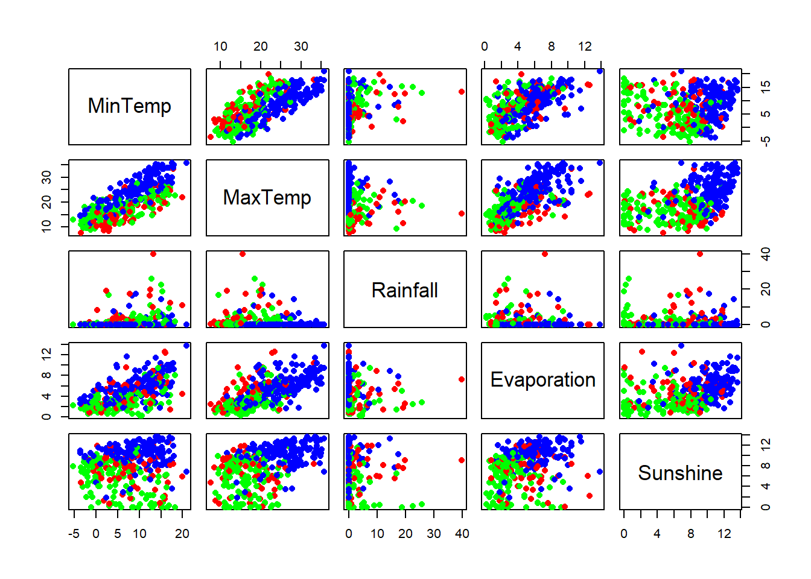
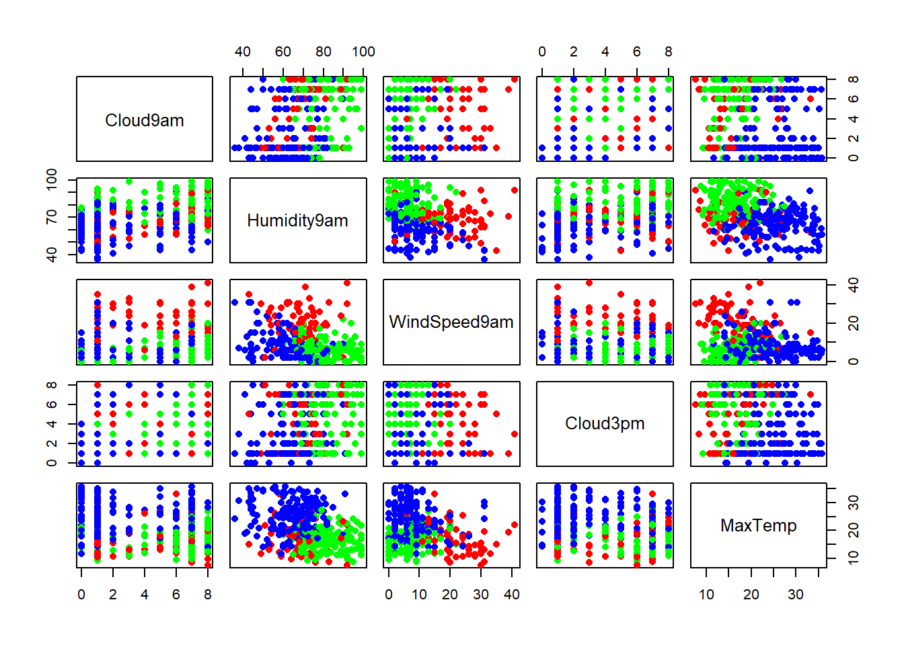
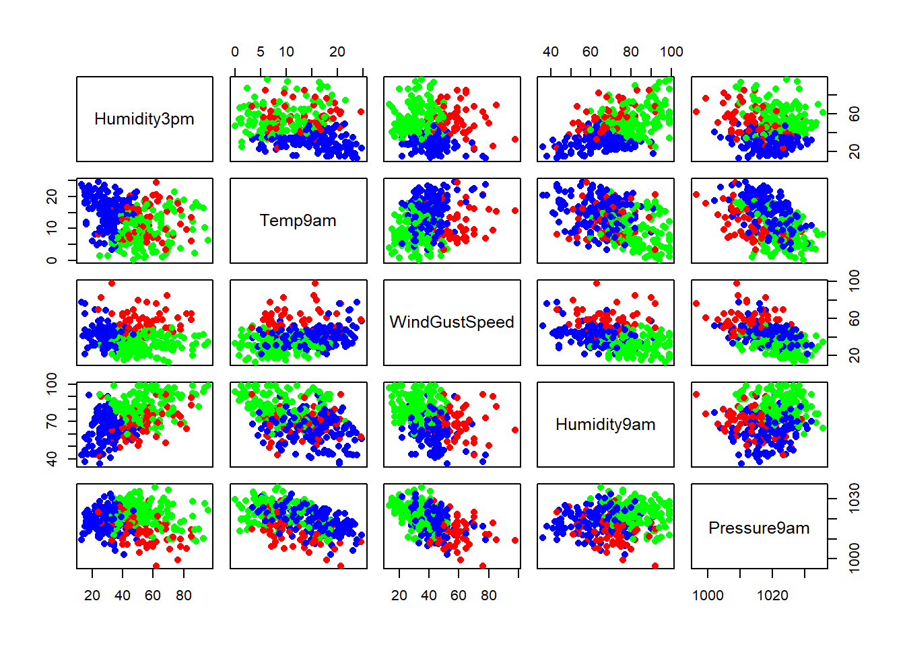
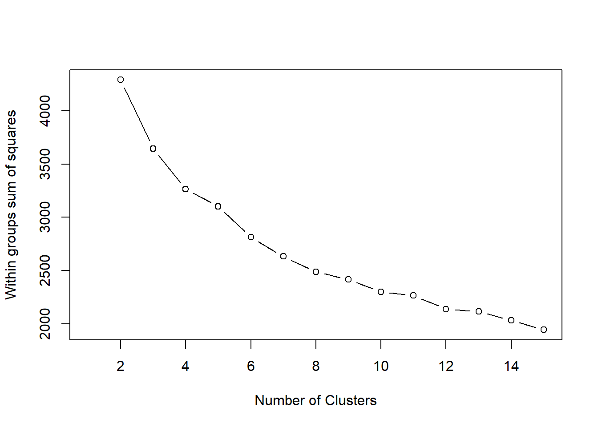
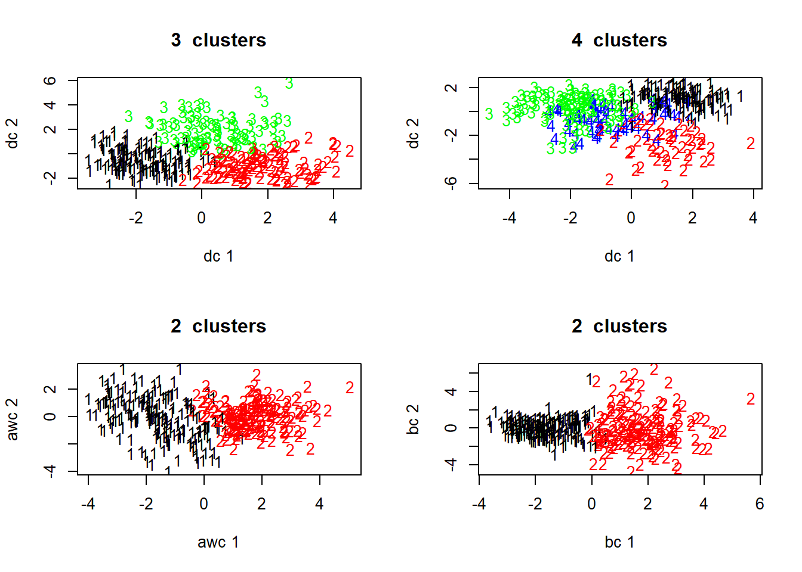
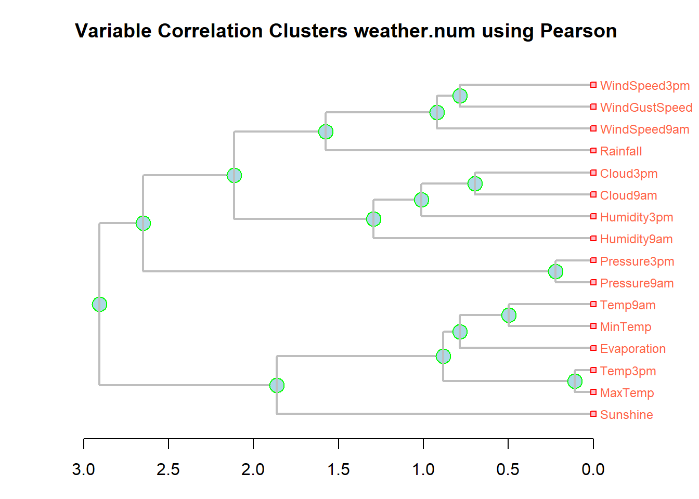
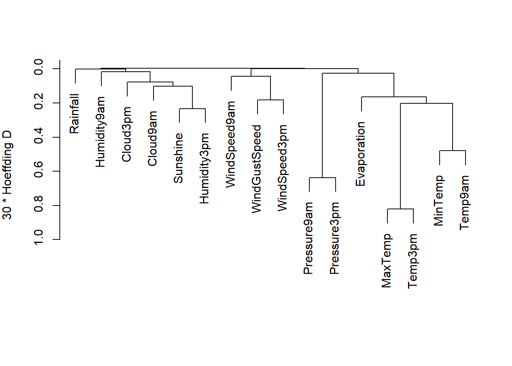

In this script we will look at Kmeans and hierarchical clustering using the weather data.
## Warning: package 'rattle' was built under R version 3.4.4## Rattle: A free graphical interface for data science with R.
## Version 5.2.0 Copyright (c) 2006-2018 Togaware Pty Ltd.
## Entrez 'rattle()' pour secouer, faire vibrer, et faire défiler vos données.##
## Attaching package: 'rattle'## The following object is masked from 'package:randomForest':
##
## importance## Warning: package 'Hmisc' was built under R version 3.4.4## Loading required package: lattice## Loading required package: survival## Loading required package: Formula##
## Attaching package: 'Hmisc'## The following object is masked from 'package:e1071':
##
## impute## The following object is masked from 'package:plotly':
##
## subplot## The following objects are masked from 'package:dplyr':
##
## src, summarize## The following objects are masked from 'package:base':
##
## format.pval, units## Loading required package: xlsxjarsdata(weather)
#
head(weather,2) # Look at the data## Date Location MinTemp MaxTemp Rainfall Evaporation Sunshine
## 1 2007-11-01 Canberra 8 24.3 0.0 3.4 6.3
## 2 2007-11-02 Canberra 14 26.9 3.6 4.4 9.7
## WindGustDir WindGustSpeed WindDir9am WindDir3pm WindSpeed9am
## 1 NW 30 SW NW 6
## 2 ENE 39 E W 4
## WindSpeed3pm Humidity9am Humidity3pm Pressure9am Pressure3pm Cloud9am
## 1 20 68 29 1019.7 1015.0 7
## 2 17 80 36 1012.4 1008.4 5
## Cloud3pm Temp9am Temp3pm RainToday RISK_MM RainTomorrow
## 1 7 14.4 23.6 No 3.6 Yes
## 2 3 17.5 25.7 Yes 3.6 YesFor this exercise, we remove the date, location, Risk, Rain Today and Rain Tomorrow columns.
Note that the K means algorithm requires numeric variables
weather <- weather[,-c(1,2,22,23,24)] # Drop the first two columns
numvars <- lapply(weather,is.numeric) # Find numeric variables in data set
numdata <- na.omit(weather[,numvars==TRUE])
head(numdata,2)## MinTemp MaxTemp Rainfall Evaporation Sunshine WindGustSpeed WindSpeed9am
## 1 8 24.3 0.0 3.4 6.3 30 6
## 2 14 26.9 3.6 4.4 9.7 39 4
## WindSpeed3pm Humidity9am Humidity3pm Pressure9am Pressure3pm Cloud9am
## 1 20 68 29 1019.7 1015.0 7
## 2 17 80 36 1012.4 1008.4 5
## Cloud3pm Temp9am Temp3pm
## 1 7 14.4 23.6
## 2 3 17.5 25.7#
km <- kmeans(x=numdata, centers=3) # Compute kmeans with 3 clustersGenerate a scatter plots of the variables colored by clusters
palette(c("blue","red", "green","orange")) # Set custom colors
cPlot <- function(vars=sample(1:15,5)){
plot(numdata[vars], col=km$cluster, pch=16)
}
cPlot(1:5)
cPlot()
cPlot()
Note that in the plot: “left” variable is on the y axis and the “under” variable is on the x axis
Next, we determine number of clusters by looking for a “knee” in the curve, i.e. the largest drop in the within sum of squares in the plot below
numdataS <- scale(numdata) # Scale the data: (x - m)/sd
ssPlot <- function(data,maxCluster=15){
SSw <- (nrow(data)-1)*sum(apply(data,2,var)) # Initialize within sum of squares
SSw <- vector()
for (i in 2:maxCluster){
SSw[i] <- sum(kmeans(data,centers=i)$withinss)
}
plot(1:maxCluster, SSw, type="b",
xlab="Number of Clusters",
ylab="Within groups sum of squares")
}
ssPlot(numdataS)
The plotcluster function in the fpc package. There are parameters to distinguish classes by ten available projection methods, including classical discriminant coordinates, methods to project differences in mean and covariance structure, asymmetric methods (separation of a homogeneous class from a heterogeneous one), local neighborhood-based methods and methods based on robust covariance matrices. One-dimensional data is plotted against the cluster number.
kmPlot <- function(data,nclust=3,...)
{
km <- kmeans(x=data, centers=nclust)
plotcluster(x=data,clvecd=km$cluster,...) # plot fcn from fpc package
title(main=paste(nclust, " clusters"))
cluster.stats(dist(data),km$cluster) # Compute cluster stats with fcn from fpc package
return(km)
}
par(mfrow=c(2,2))
kmod <- kmPlot(numdataS)
kmod8 <- kmPlot(numdataS,nclust=4)
kmod2 <- kmPlot(numdataS,nclust=2,clnum=2,method="awc")
kmod2b <- kmPlot(numdataS,nclust=2,clnum=1,method="bc") 
The following function to produce a hierarchical correlation plot. It follows code on page 135 of Data Mining with Rattle and R.
Note that in the plot shorter lengths correspond to higher correlations
numvars <- lapply(weather,is.numeric) # Find numeric variables in data set
weather.num <- na.omit(weather[,numvars==TRUE])
hcPlot <- function(data="numdata"){
df <- eval(parse(text=data))
cc <- cor(df,use="pairwise",method="pearson")
hc <- hclust(dist(cc),method="average")
dn <- as.dendrogram(hc)
op <- par(mar = c(3, 4, 3, 4.29))
plot(dn, horiz = TRUE, nodePar = list(col = 3:2, cex = c(2.0, 0.75),
pch = 21:22, bg= c("light blue", "pink"), lab.cex = 0.75,
lab.col = "tomato"), edgePar = list(col = "gray", lwd = 2), xlab="Height")
title(main=paste("Variable Correlation Clusters",data,"using Pearson",sep=" "),
sub=paste(format(Sys.time(), "%Y-%b-%d %H:%M:%S"), Sys.info()["user"]))
par(op)
return(hc)
}
hcPlot(data="weather.num") # Note: name of file must be in quotes!!
##
## Call:
## hclust(d = dist(cc), method = "average")
##
## Cluster method : average
## Distance : euclidean
## Number of objects: 16varclus, in the Hmisc package, does a hierarchical cluster analysis on variables, using the Hoeffding D statistic, squared Pearson or Spearman (the default) correlations, or proportion of observations for which two variables are both positive as similarity measures. The clustering is done by hclust().
vClus <- varclus(as.matrix(numdata),similarity = "hoeffding")
vClus## varclus(x = as.matrix(numdata), similarity = "hoeffding")
##
##
## Similarity matrix (30 * Hoeffding D)
##
## MinTemp MaxTemp Rainfall Evaporation Sunshine WindGustSpeed
## MinTemp 1.00 0.22 0.00 0.16 0.01 0.01
## MaxTemp 0.22 1.00 0.00 0.20 0.07 0.01
## Rainfall 0.00 0.00 1.00 0.00 0.01 0.00
## Evaporation 0.16 0.20 0.00 1.00 0.06 0.03
## Sunshine 0.01 0.07 0.01 0.06 1.00 0.00
## WindGustSpeed 0.01 0.01 0.00 0.03 0.00 1.00
## WindSpeed9am 0.01 0.01 0.01 0.00 0.00 0.06
## WindSpeed3pm 0.00 0.02 0.00 0.00 0.00 0.18
## Humidity9am 0.02 0.03 0.01 0.10 0.09 0.04
## Humidity3pm 0.00 0.10 0.02 0.07 0.23 0.00
## Pressure9am 0.07 0.03 0.02 0.05 0.00 0.09
## Pressure3pm 0.07 0.05 0.01 0.05 0.00 0.08
## Cloud9am 0.01 0.01 0.01 0.00 0.18 0.00
## Cloud3pm 0.00 0.00 0.00 0.00 0.14 0.00
## Temp9am 0.48 0.38 0.00 0.21 0.03 0.02
## Temp3pm 0.20 0.82 0.00 0.18 0.08 0.01
## WindSpeed9am WindSpeed3pm Humidity9am Humidity3pm
## MinTemp 0.01 0.00 0.02 0.00
## MaxTemp 0.01 0.02 0.03 0.10
## Rainfall 0.01 0.00 0.01 0.02
## Evaporation 0.00 0.00 0.10 0.07
## Sunshine 0.00 0.00 0.09 0.23
## WindGustSpeed 0.06 0.18 0.04 0.00
## WindSpeed9am 1.00 0.05 0.02 0.01
## WindSpeed3pm 0.05 1.00 0.01 0.00
## Humidity9am 0.02 0.01 1.00 0.07
## Humidity3pm 0.01 0.00 0.07 1.00
## Pressure9am 0.02 0.03 0.01 0.00
## Pressure3pm 0.01 0.03 0.01 0.00
## Cloud9am 0.01 0.00 0.04 0.10
## Cloud3pm 0.00 0.00 0.02 0.08
## Temp9am 0.01 0.00 0.05 0.03
## Temp3pm 0.01 0.02 0.03 0.11
## Pressure9am Pressure3pm Cloud9am Cloud3pm Temp9am Temp3pm
## MinTemp 0.07 0.07 0.01 0.00 0.48 0.20
## MaxTemp 0.03 0.05 0.01 0.00 0.38 0.82
## Rainfall 0.02 0.01 0.01 0.00 0.00 0.00
## Evaporation 0.05 0.05 0.00 0.00 0.21 0.18
## Sunshine 0.00 0.00 0.18 0.14 0.03 0.08
## WindGustSpeed 0.09 0.08 0.00 0.00 0.02 0.01
## WindSpeed9am 0.02 0.01 0.01 0.00 0.01 0.01
## WindSpeed3pm 0.03 0.03 0.00 0.00 0.00 0.02
## Humidity9am 0.01 0.01 0.04 0.02 0.05 0.03
## Humidity3pm 0.00 0.00 0.10 0.08 0.03 0.11
## Pressure9am 1.00 0.64 0.01 0.01 0.06 0.03
## Pressure3pm 0.64 1.00 0.00 0.01 0.08 0.04
## Cloud9am 0.01 0.00 1.00 0.09 0.00 0.01
## Cloud3pm 0.01 0.01 0.09 1.00 0.00 0.00
## Temp9am 0.06 0.08 0.00 0.00 1.00 0.34
## Temp3pm 0.03 0.04 0.01 0.00 0.34 1.00
##
## No. of observations used for each pair:
##
## MinTemp MaxTemp Rainfall Evaporation Sunshine WindGustSpeed
## MinTemp 354 354 354 354 354 354
## MaxTemp 354 354 354 354 354 354
## Rainfall 354 354 354 354 354 354
## Evaporation 354 354 354 354 354 354
## Sunshine 354 354 354 354 354 354
## WindGustSpeed 354 354 354 354 354 354
## WindSpeed9am 354 354 354 354 354 354
## WindSpeed3pm 354 354 354 354 354 354
## Humidity9am 354 354 354 354 354 354
## Humidity3pm 354 354 354 354 354 354
## Pressure9am 354 354 354 354 354 354
## Pressure3pm 354 354 354 354 354 354
## Cloud9am 354 354 354 354 354 354
## Cloud3pm 354 354 354 354 354 354
## Temp9am 354 354 354 354 354 354
## Temp3pm 354 354 354 354 354 354
## WindSpeed9am WindSpeed3pm Humidity9am Humidity3pm
## MinTemp 354 354 354 354
## MaxTemp 354 354 354 354
## Rainfall 354 354 354 354
## Evaporation 354 354 354 354
## Sunshine 354 354 354 354
## WindGustSpeed 354 354 354 354
## WindSpeed9am 354 354 354 354
## WindSpeed3pm 354 354 354 354
## Humidity9am 354 354 354 354
## Humidity3pm 354 354 354 354
## Pressure9am 354 354 354 354
## Pressure3pm 354 354 354 354
## Cloud9am 354 354 354 354
## Cloud3pm 354 354 354 354
## Temp9am 354 354 354 354
## Temp3pm 354 354 354 354
## Pressure9am Pressure3pm Cloud9am Cloud3pm Temp9am Temp3pm
## MinTemp 354 354 354 354 354 354
## MaxTemp 354 354 354 354 354 354
## Rainfall 354 354 354 354 354 354
## Evaporation 354 354 354 354 354 354
## Sunshine 354 354 354 354 354 354
## WindGustSpeed 354 354 354 354 354 354
## WindSpeed9am 354 354 354 354 354 354
## WindSpeed3pm 354 354 354 354 354 354
## Humidity9am 354 354 354 354 354 354
## Humidity3pm 354 354 354 354 354 354
## Pressure9am 354 354 354 354 354 354
## Pressure3pm 354 354 354 354 354 354
## Cloud9am 354 354 354 354 354 354
## Cloud3pm 354 354 354 354 354 354
## Temp9am 354 354 354 354 354 354
## Temp3pm 354 354 354 354 354 354
##
## hclust results (method=complete)
##
##
## Call:
## hclust(d = as.dist(1 - x), method = method)
##
## Cluster method : complete
## Number of objects: 16plot(vClus)